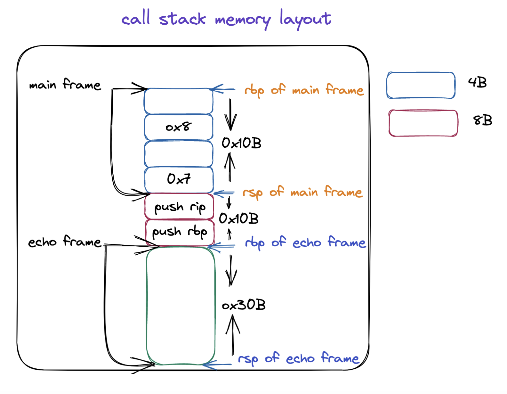

OpenMP For Construct dynamic 调度方式实现原理和源码分析
前言
在本篇文章当中主要给大家介绍 OpenMp for construct 的实现原理，以及与他相关的动态库函数分析，与 for construct 非常相关的是循环的调度方式，在 OpenMP 当中一共有四种调调方式，auto, dynamic, guided, runtime, 在本篇文章当中主要是对 dynamic 的调度方式进行分析。
前置知识
在介绍 for construct 的实现原理之前，我们首先需要了解一下编译器是如何处理函数参数传递的（本文基于 x86_64 ISA），我们来看一下下面的代码在编译之后函数参数的传递情况。
在前面的文章当中我们已经谈到过了，在 x86 当中参数传递的规约，具体的内容如下所示：
| 寄存器 | 含义 |
|---|---|
| rdi | 第一个参数 |
| rsi | 第二个参数 |
| rdx | 第三个参数 |
| rcx | 第四个参数 |
| r8 | 第五个参数 |
| r9 | 第六个参数 |
我们现在使用下面的代码来分析一下具体的情况（因为前面使用寄存器只能够传递 6 个参数，而在后面我们要分析的动态库函数当中会传递 7 个参数，因此这里我们使用 8 个参数来测试一下具体的参数传递情况）：
#include "stdio.h"
void echo(int a1, int a2, int a3, int a4, int a5, int a6, int a7, int a8)
{
printf("%d %d %d %d %d %d %d %d\n", a8, a7, a1, a2, a3, a4, a5, a6);
}
int main()
{
echo(1, 2, 3, 4 ,5 ,6, 7, 8);
return 0;
}
上面的程序的反汇编结果如下所示：
000000000040053d <echo>:
40053d: 55 push %rbp
40053e: 48 89 e5 mov %rsp,%rbp
400541: 48 83 ec 30 sub $0x30,%rsp
400545: 89 7d fc mov %edi,-0x4(%rbp)
400548: 89 75 f8 mov %esi,-0x8(%rbp)
40054b: 89 55 f4 mov %edx,-0xc(%rbp)
40054e: 89 4d f0 mov %ecx,-0x10(%rbp)
400551: 44 89 45 ec mov %r8d,-0x14(%rbp)
400555: 44 89 4d e8 mov %r9d,-0x18(%rbp)
400559: 8b 7d f4 mov -0xc(%rbp),%edi
40055c: 8b 75 f8 mov -0x8(%rbp),%esi
40055f: 8b 55 fc mov -0x4(%rbp),%edx
400562: 8b 45 18 mov 0x18(%rbp),%eax # a8
400565: 8b 4d e8 mov -0x18(%rbp),%ecx
400568: 89 4c 24 10 mov %ecx,0x10(%rsp)
40056c: 8b 4d ec mov -0x14(%rbp),%ecx
40056f: 89 4c 24 08 mov %ecx,0x8(%rsp)
400573: 8b 4d f0 mov -0x10(%rbp),%ecx
400576: 89 0c 24 mov %ecx,(%rsp)
400579: 41 89 f9 mov %edi,%r9d
40057c: 41 89 f0 mov %esi,%r8d
40057f: 89 d1 mov %edx,%ecx
400581: 8b 55 10 mov 0x10(%rbp),%edx # a7
400584: 89 c6 mov %eax,%esi # a8
400586: bf 64 06 40 00 mov $0x400664,%edi
40058b: b8 00 00 00 00 mov $0x0,%eax
400590: e8 8b fe ff ff callq 400420 <printf@plt>
400595: c9 leaveq
0000000000400597 <main>:
400597: 55 push %rbp
400598: 48 89 e5 mov %rsp,%rbp
40059b: 48 83 ec 10 sub $0x10,%rsp
40059f: c7 44 24 08 08 00 00 movl $0x8,0x8(%rsp) # 保存参数 8
4005a6: 00
4005a7: c7 04 24 07 00 00 00 movl $0x7,(%rsp) # 保存参数 7
4005ae: 41 b9 06 00 00 00 mov $0x6,%r9d # 保存参数 6
4005b4: 41 b8 05 00 00 00 mov $0x5,%r8d # 保存参数 5
4005ba: b9 04 00 00 00 mov $0x4,%ecx # 保存参数 4
4005bf: ba 03 00 00 00 mov $0x3,%edx # 保存参数 3
4005c4: be 02 00 00 00 mov $0x2,%esi # 保存参数 2
4005c9: bf 01 00 00 00 mov $0x1,%edi # 保存参数 1
4005ce: e8 6a ff ff ff callq 40053d <echo>
4005d3: b8 00 00 00 00 mov $0x0,%eax
4005d8: c9 leaveq
4005d9: c3 retq
4005da: 66 0f 1f 44 00 00 nopw 0x0(%rax,%rax,1)
从上面的汇编程序我们可以知道 1 - 6，这几个参数确实是通过寄存器传递的，对应的寄存器就是上文当中我们提到不同的参数对应的寄存器。但是参数 7 和参数 8 是保存在栈上的。根据上面的 main 函数的汇编程序分析，他对应的栈帧的内存布局如下所示：

我们在来分析一下 echo 函数当中 printf 函数参数的传递情况，第二个参数和第三个参数分别是 a8, a7，应该分别保存到寄存器 rsi/esi, rdx/edx 当中，在上面的汇编代码当中已经使用注释的方式进行标注出来了，从下往上进行分析可以看到 a8 保存在位置 0x18(%rbp)，a7 保存在 0x10(%rbp)，这个地址正是 main 函数保存 a7（当进入函数 echo 之后，a7，和 a8 的位置分别是 rsp + 0x10）, a8（当进入函数 echo 之后，a7，和 a8 的位置分别是 rsp + 0x10 + 0x8） 的位置，具体可以结合上面的内存布局图进行分析。
dynamic 调度方式分析
我们使用下面的代码来分析一下动态调度的情况下整个程序的执行流程是怎么样的：
#pragma omp parallel for num_threads(t) schedule(dynamic, size)
for (i = lb; i <= ub; i++)
body;
编译器会将上面的程序编译成下面的形式：
void subfunction (void *data)
{
long _s0, _e0;
while (GOMP_loop_dynamic_next (&_s0, &_e0))
{
long _e1 = _e0, i;
for (i = _s0; i < _e1; i++)
body;
}
// GOMP_loop_end_nowait 这个函数的主要作用就是释放数据的内存空间 在后文当中不进行分析
GOMP_loop_end_nowait ();
}
GOMP_parallel_loop_dynamic_start (subfunction, NULL, t, lb, ub+1, 1, size);
subfunction (NULL);
// 这个函数在前面的很多文章已经分析过 本文也不在进行分析
GOMP_parallel_end ();
void
GOMP_parallel_loop_dynamic_start (void (*fn) (void *), void *data,
unsigned num_threads, long start, long end,
long incr, long chunk_size)
{
gomp_parallel_loop_start (fn, data, num_threads, start, end, incr,
GFS_DYNAMIC, chunk_size);
}
static void
gomp_parallel_loop_start (void (*fn) (void *), void *data,
unsigned num_threads, long start, long end,
long incr, enum gomp_schedule_type sched,
long chunk_size)
{
struct gomp_team *team;
// 解析具体创建多少个线程
num_threads = gomp_resolve_num_threads (num_threads, 0);
// 创建一个含有 num_threads 个线程的线程组
team = gomp_new_team (num_threads);
// 对线程组的数据进行初始化操作
gomp_loop_init (&team->work_shares[0], start, end, incr, sched, chunk_size);
// 启动 num_threads 个线程执行函数 fn
gomp_team_start (fn, data, num_threads, team);
}
enum gomp_schedule_type
{
GFS_RUNTIME, // runtime 调度方式
GFS_STATIC, // static 调度方式
GFS_DYNAMIC, // dynamic 调度方式
GFS_GUIDED, // guided 调度方式
GFS_AUTO // auto 调度方式
};
在上面的程序当中 GOMP_parallel_loop_dynamic_start，有 7 个参数，我们接下来仔细解释一下这七个参数的含义：
- fn，函数指针也就是并行域被编译之后的函数。
- data，指向共享或者私有的数据，在并行域当中可能会使用外部的一些变量。
- num_threads，并行域当中指定启动线程的个数。
- start，for 循环迭代的初始值，比如 for(int i = 0; ;) 这个 start 就是 0 。
- end，for 循环迭代的最终值，比如 for(int i = 0; i < 100; i++) 这个 end 就是 100 。
- incr，这个值一般都是 1 或者 -1，如果是 for 循环是从小到达迭代这个值就是 1，反之就是 -1。
- chunk_size，这个就是给一个线程划分块的时候一个块的大小，比如 schedule(dynamic, 1)，这个 chunk_size 就等于 1 。
在函数 GOMP_parallel_loop_dynamic_start 当中会调用函数 gomp_parallel_loop_start ，这个函数的主要作用就是将整个循环的起始位置信息保存到线程组内部，那么就能够在函数 GOMP_loop_dynamic_next 当中直接使用这些信息进行不同线程的分块划分。GOMP_loop_dynamic_next 最终会调用函数 gomp_loop_dynamic_next ，其源代码如下所示：
static bool
gomp_loop_dynamic_next (long *istart, long *iend)
{
bool ret;
ret = gomp_iter_dynamic_next (istart, iend);
return ret;
}
gomp_loop_dynamic_next 函数的返回值是一个布尔值：
- 如果返回值为 true ，则说明还有剩余的分块需要执行。
- 如果返回值为 false，则说明没有剩余的分块需要执行了，根据前面 dynamic 编译之后的结果，那么就会退出 while 循环。
gomp_iter_dynamic_next 是划分具体的分块，并且将分块的起始位置保存到变量 istart 和 iend 当中，因为传递的是指针，就能够使用 s0 和 e0 得到数据的值，下面是 gomp_iter_dynamic_next 的源代码，就是具体的划分算法了。
bool
gomp_iter_dynamic_next (long *pstart, long *pend)
{
// 得到当前线程的指针
struct gomp_thread *thr = gomp_thread ();
// 得到线程组共享的数据
struct gomp_work_share *ws = thr->ts.work_share;
long start, end, nend, chunk, incr;
// 保存迭代的最终值
end = ws->end;
// 这个值一般都是 1
incr = ws->incr;
// 保存分块的大小 chunk size
chunk = ws->chunk_size;
// ws->mode 在数据分块比较小的时候就是 1 在数据分块比较大的时候就是 0
if (__builtin_expect (ws->mode, 1))
{
// __sync_fetch_and_add 函数是一个原子操作 ws->next 的初始值为 for 循环的起始位置值
// 这个函数的返回值是 ws->next 的旧值 然后会将 ws->next 的值加上 chunk
// 并且整个操作是原子的 是并发安全的
long tmp = __sync_fetch_and_add (&ws->next, chunk);
// 从小到大迭代
if (incr > 0)
{
if (tmp >= end)
return false;
// 分块的最终位置
nend = tmp + chunk;
// 溢出保护操作 分块的值需要小于最终的迭代位置
if (nend > end)
nend = end;
// 将分块的值赋值给 pstart 和 pend 这样就能够在并行域当中得到这个分块的区间了
*pstart = tmp;
*pend = nend;
return true;
}
else
{
// 同样的原理不过是从大到小达迭代
if (tmp <= end)
return false;
nend = tmp + chunk;
if (nend < end)
nend = end;
*pstart = tmp;
*pend = nend;
return true;
}
}
// 当数据分块比较大的时候执行下面的操作
// 下面的整体的流程相对比较容易理解整个过程就是一个比较并交换的过程
// 当比较并交换成功之后就返回结果 返回为 true 或者分块已经分完的话也进行返回
start = ws->next;
while (1)
{
long left = end - start;
long tmp;
// 如果分块已经完全分完 就直接返回 false
if (start == end)
return false;
if (incr < 0)
{
if (chunk < left)
chunk = left;
}
else
{
if (chunk > left)
chunk = left;
}
nend = start + chunk;
tmp = __sync_val_compare_and_swap (&ws->next, start, nend);
if (__builtin_expect (tmp == start, 1))
break;
start = tmp;
}
*pstart = start;
*pend = nend;
return true;
}
gomp_iter_dynamic_next 函数当中有两种情况的划分方式：
当数据块相对比较小的时候，说明划分的次数就会相对多一点，在这种情况下如果使用 CAS 的话成功的概率就会相对低，对应的就会降低程序执行的效率，因此选择 __sync_fetch_and_add 以减少多线程的竞争情况，降低 CPU 的消耗。
当数据块比较大的时候，说明划分的次数相对比较小，就使用比较并交换的操作（CAS），这样多个线程在进行竞争的时候开销就比较小。
在上面的文章当中我们提到了，gomp_loop_init 函数是对线程共享数据 work_share 进行初始化操作，如果你对具体 work_share 中的数据初始化规则感兴趣，下面是对其初始化的程序：
static inline void
gomp_loop_init (struct gomp_work_share *ws, long start, long end, long incr,
enum gomp_schedule_type sched, long chunk_size)
{
ws->sched = sched;
ws->chunk_size = chunk_size;
/* Canonicalize loops that have zero iterations to ->next == ->end. */
ws->end = ((incr > 0 && start > end) || (incr < 0 && start < end))
? start : end;
ws->incr = incr;
ws->next = start;
if (sched == GFS_DYNAMIC)
{
ws->chunk_size *= incr;
#ifdef HAVE_SYNC_BUILTINS
{
/* For dynamic scheduling prepare things to make each iteration
faster. */
struct gomp_thread *thr = gomp_thread ();
struct gomp_team *team = thr->ts.team;
long nthreads = team ? team->nthreads : 1;
if (__builtin_expect (incr > 0, 1))
{
/* Cheap overflow protection. */
if (__builtin_expect ((nthreads | ws->chunk_size)
>= 1UL << (sizeof (long)
* __CHAR_BIT__ / 2 - 1), 0))
ws->mode = 0;
else
ws->mode = ws->end < (LONG_MAX
- (nthreads + 1) * ws->chunk_size);
}
/* Cheap overflow protection. */
else if (__builtin_expect ((nthreads | -ws->chunk_size)
>= 1UL << (sizeof (long)
* __CHAR_BIT__ / 2 - 1), 0))
ws->mode = 0;
else
ws->mode = ws->end > (nthreads + 1) * -ws->chunk_size - LONG_MAX;
}
#endif
}
}
实例分析
在本小节当中我们将使用一个实际的例子去分析上面我们所谈到的整个过程：
#include <stdio.h>
#include <omp.h>
int main()
{
#pragma omp parallel for num_threads(4) default(none) schedule(dynamic, 2)
for(int i = 0; i < 12; ++i)
{
printf("i = %d tid = %d\n", i, omp_get_thread_num());
}
return 0;
}
上面的程序被编译之后的结果如下所示，具体的程序分析和注释都在下面的汇编程序当中：
000000000040073d <main>:
40073d: 55 push %rbp
40073e: 48 89 e5 mov %rsp,%rbp
400741: 48 83 ec 20 sub $0x20,%rsp
400745: 48 c7 04 24 02 00 00 movq $0x2,(%rsp) # 这个就是 chunk size 符合上面的代码当中指定的 2
40074c: 00
40074d: 41 b9 01 00 00 00 mov $0x1,%r9d # 因为是从小到达 incr 这个参数是 1
400753: 41 b8 0c 00 00 00 mov $0xc,%r8d # 这个参数是 end 符合上面的程序 12
400759: b9 00 00 00 00 mov $0x0,%ecx # 这个参数是 start 符合上面的程序 1
40075e: ba 04 00 00 00 mov $0x4,%edx # num_threads(4) 线程的个数是 4
400763: be 00 00 00 00 mov $0x0,%esi # 因为上面的代码当中并没有在并行域当中使用数据 因此这个数据为 0 也就是 NULL
400768: bf 88 07 40 00 mov $0x400788,%edi # 函数指针 main._omp_fn.0
40076d: e8 ce fe ff ff callq 400640 <GOMP_parallel_loop_dynamic_start@plt>
400772: bf 00 00 00 00 mov $0x0,%edi
400777: e8 0c 00 00 00 callq 400788 <main._omp_fn.0>
40077c: e8 5f fe ff ff callq 4005e0 <GOMP_parallel_end@plt>
400781: b8 00 00 00 00 mov $0x0,%eax
400786: c9 leaveq
400787: c3 retq
0000000000400788 <main._omp_fn.0>:
400788: 55 push %rbp
400789: 48 89 e5 mov %rsp,%rbp
40078c: 53 push %rbx
40078d: 48 83 ec 38 sub $0x38,%rsp
400791: 48 89 7d c8 mov %rdi,-0x38(%rbp)
400795: c7 45 ec 00 00 00 00 movl $0x0,-0x14(%rbp)
40079c: 48 8d 55 e0 lea -0x20(%rbp),%rdx
4007a0: 48 8d 45 d8 lea -0x28(%rbp),%rax
4007a4: 48 89 d6 mov %rdx,%rsi
4007a7: 48 89 c7 mov %rax,%rdi
4007aa: e8 21 fe ff ff callq 4005d0 <GOMP_loop_dynamic_next@plt>
4007af: 84 c0 test %al,%al # 如果 GOMP_loop_dynamic_next 返回值是 0 则跳转到 4007fb 执行函数 GOMP_loop_end_nowait
4007b1: 74 48 je 4007fb <main._omp_fn.0+0x73>
4007b3: 48 8b 45 d8 mov -0x28(%rbp),%rax
4007b7: 89 45 ec mov %eax,-0x14(%rbp)
4007ba: 48 8b 45 e0 mov -0x20(%rbp),%rax
4007be: 89 c3 mov %eax,%ebx
# ===========================下面的代码就是执行循环和 body =================
4007c0: e8 2b fe ff ff callq 4005f0 <omp_get_thread_num@plt>
4007c5: 89 c2 mov %eax,%edx
4007c7: 8b 45 ec mov -0x14(%rbp),%eax
4007ca: 89 c6 mov %eax,%esi
4007cc: bf 94 08 40 00 mov $0x400894,%edi
4007d1: b8 00 00 00 00 mov $0x0,%eax
4007d6: e8 25 fe ff ff callq 400600 <printf@plt>
4007db: 83 45 ec 01 addl $0x1,-0x14(%rbp)
4007df: 39 5d ec cmp %ebx,-0x14(%rbp)
4007e2: 7c dc jl 4007c0 <main._omp_fn.0+0x38>
# ======================================================================
# ============下面的代码主要是进行 while 循环查看循环是否执行完成==============
4007e4: 48 8d 55 e0 lea -0x20(%rbp),%rdx
4007e8: 48 8d 45 d8 lea -0x28(%rbp),%rax
4007ec: 48 89 d6 mov %rdx,%rsi
4007ef: 48 89 c7 mov %rax,%rdi
4007f2: e8 d9 fd ff ff callq 4005d0 <GOMP_loop_dynamic_next@plt>
4007f7: 84 c0 test %al,%al
4007f9: 75 b8 jne 4007b3 <main._omp_fn.0+0x2b>
# ======================================================================
4007fb: e8 10 fe ff ff callq 400610 <GOMP_loop_end_nowait@plt>
400800: 48 83 c4 38 add $0x38,%rsp
400804: 5b pop %rbx
400805: 5d pop %rbp
400806: c3 retq
400807: 66 0f 1f 84 00 00 00 nopw 0x0(%rax,%rax,1)
40080e: 00 00
总结
在本篇文章当中我们主要分析了 OpenMP 当中 for 循环动态调度方式的具体实现原理，以及动态库函数的分析。整个过程主要有两大部分，一个是编译角度，编译器会将 for construct 编译成什么样子，以及动态库函数具体是如何划分迭代分块的。在迭代分块当中主要分为两种方式，当分块数目多的时候不使用 CAS 因为这样线程之间竞争比较激烈，但是当分块数目比较小的时候就使用 CAS ，这种做法可以提高程序执行的效率。
更多精彩内容合集可访问项目：https://github.com/Chang-LeHung/CSCore
关注公众号：一无是处的研究僧，了解更多计算机（Java、Python、计算机系统基础、算法与数据结构）知识。